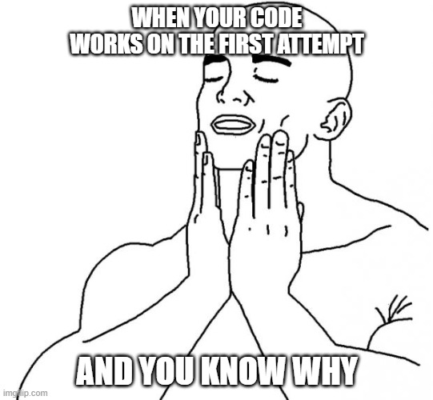

Problem Solving
Chur Chur! You made it to a new blog post! Thanks for coming back to share the madness of this fun learning
process. Since you are here let me remind you to grab your fan as we go through this technical blog. Might be
your brain overheats (or turns into a pretzel) like mine!
Let me tell you a couple stories, then, about fun times I had this week.
Blocked on a simple problem:
I wanted to create a function that allowed me to create objects as properties inside an object. I wanted the
function to go through an array with names, access the value and give that value to a new property inside the
object. And then, I wanted to create another one to do the same to the properties I had just created and give it
a value from another array… that was when my brain became a pretzel. So, I decided to do it manually, assign
each value myself by naming the items of the arrays by their index number, one by one, like a chump. And I
wasn’t happy, my test passed but my ego was bruised.
I found how some cohort mates had done it and some suggestions from our facilitators but they made less sense
than my chump code, until J0sePh came to the rescue, one of the posts in discord was about square brackets and
dot notation! And even though I couldn’t get it yet, a little window opened and I saw there was hope. It turned
out a for loop was all that was needed for both cases, and both functions could actually be built upon just one!
I just had to wrap my head about using the index number from the looping array in different points of the
functions, inside of layers of brackets, both curly and square.
I learnt the meaning of life after this, now I’m one with the universe and rainbows come out of my ears when I
sneeze. But jokes aside, I learnt that every problem has a solution if we understand the terms and logic that
rules the situation. Once we know this, it is all about finding and using the tools that cut through the
issue.
Elegantly solved a problem:
When going through one of this week’s exercises I had to add a new item to an array that was contained inside a
property, that was contained inside an object… again, Pretzelbrain to the rescue! So I left this aside for a
while, because I knew I would understand how to do it once I had gone through the exercises before this one, I
knew I shouldn’t get ahead of myself. Understanding the other exercises was a long process (as you can read
about just above), but once I had cracked the case on those ones, this particular one looked as easy as typing
my name. I saw the solution staring at me after just reading a bit about using the .push() method, typed the
code once, console.logged it, and it worked straight away!

This is the best way I can find to describe the feeling.
During this time I felt focused, engaged in all my cognitive functions, and motivated. I was confident I would
be able to solve the problem. Having the test to use as reference, as well as mates, youtube and google gave me
a great deal of confidence, but it was more the fact that I had done similar things before and I was having a
blast doing it that made everything feel like a game. My main takeaway is that I work better when I use my sense
of humour and recognise where I am at in the process, trying to understand every little thing from the beginning
puts me under a lot of pressure and turns everything into a stressful and straining task; acknowledging that I’m
figuring it out as I go makes it as good as going through a puzzle game, like a Zelda dungeon!
Problem-solving techniques:
Well, this bit is going to be a bit funky. Problem solving to me can look like a number of things. I got the
‘brute force’ method, (a.k.a.) looking at it intensely for an hour until it surrenders its secrets. The ‘look
for the solution’ method is me hoping I can find the exact line of code somewhere in the ether/cyberspace and
reverse engineer it to understand how it works. I usually love this option, it becomes something like a
self-driven coding workshop with a clear expected outcome. Sometimes I will just write a line of code I think
will do the job and it does! If I know why it worked I clap like a happy seal, if I don’t, then I repeat the
reverse engineering bit from before and clap again at the end when I have it figured out.
I am always using console.log, I find no reason not to use it, even when I know the solution, the process and
everything, it just gives me peace of mind and satisfaction to see my results come out as expected in the
console; it’s like a morale boost and insight all in one. The console also gives me all the error messages I
need to see where I’m going wrong, troubleshooting then becomes a bit of trial and error until I understand the
nature of the bug.
I’ll go through all the above when I’m on my own and usually get to where I need to be, but sharing the process with one or more people in my cohort is a whole different deal. We build off of each other’s knowledge, keep our morale up, help each other understand and see things we were ignoring or shift our attention to something the right thing when we get tunnel vision on the wrong part of the exercise. Asking coaches is great, since they already know how to get through the problems, and they are great at helping me navigate it, but doing it with my peers is a lot more fun, since we can all share those breakthrough moments and celebrate them with tears in our eyes (from laughter, of course).
That’s pretty much the messy picture of my problem solving! Hope your brains are properly pretzel-shaped and toasty now!